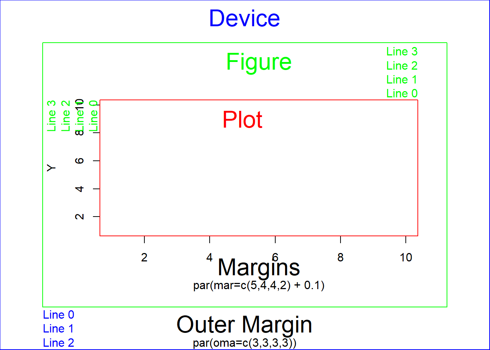

Chapter 9 Plots
9.1 Graphical parameters par()
9.1.1 Set graphical parameters
Change global option
par(xlog = T)change for local plot
plot(..., xlog = T)When parameters are set, their previous values are returned in an invisible named list. Such a list can be passed as an argument to par to restore the parameter values.
opar <- par(xlog = T)
plot(...)
par(opar)reset default
dev.off()check current parameter
par("xlog")#> [1] FALSEThe parameters are defined for the currently active device
- Normally the Rstudio plot panel
- If
png()orpdf()opend => only within this document dev.off()closes device and resetpar()- If
png()orpdf()⇒ the same par are active as they were before the devicepng()orpdf()was opend - If Rstudio panel ⇒ the default par are active
- If
9.1.2 Default
par()#> $xlog
#> [1] FALSE
#>
#> $ylog
#> [1] FALSE
#>
#> $adj
#> [1] 0.5
#>
#> $ann
#> [1] TRUE
#>
#> $ask
#> [1] FALSE
#>
#> $bg
#> [1] "white"
#>
#> $bty
#> [1] "o"
#>
#> $cex
#> [1] 1
#>
#> $cex.axis
#> [1] 1
#>
#> $cex.lab
#> [1] 1
#>
#> $cex.main
#> [1] 1.2
#>
#> $cex.sub
#> [1] 1
#>
#> $cin
#> [1] 0.15 0.20
#>
#> $col
#> [1] "black"
#>
#> $col.axis
#> [1] "black"
#>
#> $col.lab
#> [1] "black"
#>
#> $col.main
#> [1] "black"
#>
#> $col.sub
#> [1] "black"
#>
#> $cra
#> [1] 28.8 38.4
#>
#> $crt
#> [1] 0
#>
#> $csi
#> [1] 0.2
#>
#> $cxy
#> [1] 0.02604167 0.06329115
#>
#> $din
#> [1] 6.999999 4.999999
#>
#> $err
#> [1] 0
#>
#> $family
#> [1] ""
#>
#> $fg
#> [1] "black"
#>
#> $fig
#> [1] 0 1 0 1
#>
#> $fin
#> [1] 6.999999 4.999999
#>
#> $font
#> [1] 1
#>
#> $font.axis
#> [1] 1
#>
#> $font.lab
#> [1] 1
#>
#> $font.main
#> [1] 2
#>
#> $font.sub
#> [1] 1
#>
#> $lab
#> [1] 5 5 7
#>
#> $las
#> [1] 0
#>
#> $lend
#> [1] "round"
#>
#> $lheight
#> [1] 1
#>
#> $ljoin
#> [1] "round"
#>
#> $lmitre
#> [1] 10
#>
#> $lty
#> [1] "solid"
#>
#> $lwd
#> [1] 1
#>
#> $mai
#> [1] 1.02 0.82 0.82 0.42
#>
#> $mar
#> [1] 5.1 4.1 4.1 2.1
#>
#> $mex
#> [1] 1
#>
#> $mfcol
#> [1] 1 1
#>
#> $mfg
#> [1] 1 1 1 1
#>
#> $mfrow
#> [1] 1 1
#>
#> $mgp
#> [1] 3 1 0
#>
#> $mkh
#> [1] 0.001
#>
#> $new
#> [1] FALSE
#>
#> $oma
#> [1] 0 0 0 0
#>
#> $omd
#> [1] 0 1 0 1
#>
#> $omi
#> [1] 0 0 0 0
#>
#> $page
#> [1] TRUE
#>
#> $pch
#> [1] 1
#>
#> $pin
#> [1] 5.759999 3.159999
#>
#> $plt
#> [1] 0.1171429 0.9400000 0.2040000 0.8360000
#>
#> $ps
#> [1] 12
#>
#> $pty
#> [1] "m"
#>
#> $smo
#> [1] 1
#>
#> $srt
#> [1] 0
#>
#> $tck
#> [1] NA
#>
#> $tcl
#> [1] -0.5
#>
#> $usr
#> [1] 0 1 0 1
#>
#> $xaxp
#> [1] 0 1 5
#>
#> $xaxs
#> [1] "r"
#>
#> $xaxt
#> [1] "s"
#>
#> $xpd
#> [1] FALSE
#>
#> $yaxp
#> [1] 0 1 5
#>
#> $yaxs
#> [1] "r"
#>
#> $yaxt
#> [1] "s"
#>
#> $ylbias
#> [1] 0.29.1.3 Device region
opar <- par(xpd = NA, mar = c(5, 4, 4, 2) + 0.1, oma = c(3, 3, 3, 3) + 0.05)
plot(1:10, 1:10, type = "n", xlab = "", ylab = "Y")
box("plot", col = "red")
box("inner", col = "green")
box("outer", col = "blue")
text(5, 9, "Plot", col = "red", cex = 2)
mtext("Figure", col = "green", cex = 2, side = 3, line = 2)
mtext("Device", col = "blue", cex = 2, side = 3, line = 1, outer = T)
mtext(text = c("Line 0", "Line 1", "Line 2", "Line 3"), side = 3, line = 0:3,
at = grconvertX(1, "npc", "user"), adj = 1, col = "green")
mtext(text = c("Line 0", "Line 1", "Line 2", "Line 3"), side = 2, line = 0:3,
adj = 1, col = "green")
mtext(text = c("Line 0", "Line 1", "Line 2"), side = 1, line = 0:2, outer = T,
at = 0, adj = 0, col = "blue")
mtext(text = "Margins", side = 1, line = 2, cex = 2)
mtext(text = "par(mar=c(5,4,4,2) + 0.1)", side = 1, line = 3)
mtext(text = "Outer Margin", side = 1, line = 1, cex = 2, outer = T)
mtext(text = "par(oma=c(3,3,3,3))", side = 1, line = 2, outer = T)
par(opar)9.1.3.1 Coordinate system outside plot
par("mar") # Margine Area
#> [1] 5.1 4.1 4.1 2.1
par("oma") # Outer Margin Area
#> [1] 0 0 0 0
par("mgp") # position of [1] x/y-label, [2] axis, [3] ticks
#> [1] 3 1 0
par("mex") # 'height'' of one line
#> [1] 19.1.3.2 Normalized device coordinates (NDC) [0, 1]
par("fig") # Start and endpoint of ploting region
#> [1] 0 1 0 1
par("omd") # oma in NDC
#> [1] 0 1 0 19.1.3.3 Change between coordinate system
Use grconvertX() to change between different coordinate systems
9.1.3.4 Plot outside plotting region
par("xpd")
#> [1] FALSEFALSE \(\Rightarrow\) clipped to the plot regions
TRUE \(\Rightarrow\) clipped to the figure region
NA \(\Rightarrow\) clipped to the device region